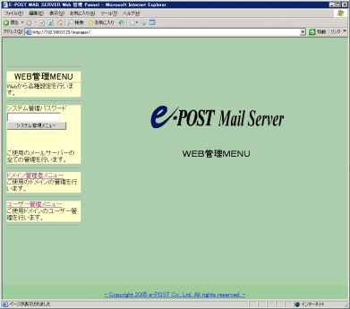
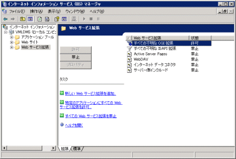
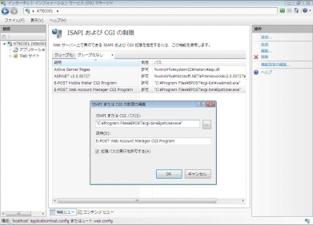

遠隔からの管理について
１．遠隔からの管理方法とCGIプログラムの「Web管理」
離れた環境よりメールサーバを操作する方法としては、以下の方法があります。利用環境にあわせて遠隔管理する方法を検討してください。
- リモートデスクトップ接続を許可、離れた環境よりリモートデスクトップ接続より操作する。
- サードパーティーのリモート接続製品を導入し、離れた環境より接続可能にし、操作できるようにする。
- Webサーバを構築設定し、付属のCGIプログラム「Web管理」を設置してWeb経由で操作できるようにする。
前２つの方法は、それぞれ関連資料を参考にしていただき、ここでは最後の「Web管理」を利用する方法についてふれます。
E-Post Mail Server・E-Post SMTP Server・E-Post BossCheck Serverシリーズには、Webから管理するためのCGIプログラム「Web管理」が用意されています。
Webサーバを利用し、メールサーバを管理する場合は、メールサーバーマシン上にWebサーバを設定・構築し、用意されているCGIプログラム及びHTMLファイルを設置することで、以下のようなメールサーバ操作がWeb上から可能になります。

- 環境設定 ・・・・・・・メールサーバの運用環境設定を行います。
- サービス制御・・・・・・各サービスのサービス起動・停止制御を行います。
- バージョン情報・・・・・各プログラムバージョンの情報を表示します。
- ドメイン管理 ・・・・・・管理するドメインの参照・登録・削除を行います。
- ユーザー管理・・・・・・実ユーザー（アカウント）の参照・登録・削除を行います。
- エイリアス管理・・・・・エイリアスの参照・登録・削除を行います
- メーリングリスト管理・・メーリングリストの参照・登録・削除を行います。
E-Post Mail Server・E-Post SMTP Server・E-Post BossCheck Serverシリーズでは、「Web管理」CGIプログラムは標準装備されており、インストール時でいっしょにプログラムインストールフォルダ内にコピーされます。
なお、ユーザー管理のうち、アカウントマネージャにある「自動応答」設定機能に該当する項目について、EpstUser v4.21以降は、メール自動応答オプションの設定ができるようになっています。
２．「Web管理」CGIプログラムを使う
事前にWebサーバのIISを設定・構築しておき、動作させてください。PerlやPHPなどは不要です。
Web管理のCGIプログラムの設定方法は、いっしょにインストールされる readme.html ファイルに設定方法が書かれていますので参照してください。readme.html ファイルは、プログラムインストールフォルダ下のwebmanagerフォルダ内にコピーされています。（例・C:\Program Files\EPOST\webmanager\reame.html）
readme.html にもふれられていますが、IISで「Web管理」CGIプログラムを動作させるには、下記の点が重要なポイントになります。
- IIS 6.xの場合・・・「Webサービス拡張」で「すべての不明なCGI拡張」を［許可］設定にする必要があります。

- IIS 7.xの場合・・・IISのモジュールとして、CGI・ISAPフィルタ・ISAPI拡張機能などを追加しておく必要があります。さらに、拡張子 .exe のファイルが、CGIプログラムとして実行可能になるようs設定する必要があります。

（関連FAQ）
●Windows Server 2012 R2 / 2016 / 2019 / 2022 / 2025 のIISでWeb管理を設定するときの補足・修正事項
{kind=link}
{kind=link}
{kind=link}